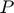

Script para construccion de matriz P
Autor: Tabita Catalán
Contents
Parámetros
El usuario debe definir algunos parámetros.
considerar_nvl_socioecono dice si la matriz P incluye el criterio del nivel socioeconomico. Si es false, solo considera edad y sexo. Si es true, se necesita adicionalmente definir la variable tipo_nvl_socio.
tipo_nvl_socio dice la forma en que se calcula el nivel socioeconomico. Hay 4 opciones:
- promedio: asigna a todos los habitantes del hogar un tramo asociado al ingreso per capita del hogar.
- maximo: asigna a todos los habitantes del hogar el mayor tramo de ingreso final de la EOD de entre todos los miembros del hogar.
- ips: basado en el IPS de la comuna donde reside la persona.
- pobreza: basado en la tasa de pobreza de la comuna donde reside la persona.
Si considerar_no_viajeros es true, entonces se incluye en el calculo de la matriz a las personas que no realizaron viajes.
Si restar_horas_sueno es true, entonces se descuenta 7/24 de la primera columna (es decir, se reduce en 7 horas el tiempo en el hogar). Notar que esto necesariamente genera una matriz P que NO cumple para cada , o sea, que no suma 1 por filas.
A priori, la matriz  obtenida no va a sumar 1 por filas. modo_normalizacion permite corregirlo. Las opciones son:
- 0: no normalizar
- 1: se corrige cambiando el ultimo ambiente (otros). Altamente NO recomendable si restar_horas_sueno es true.
- 2: se corrige dividiendo por el total por fila.
considerar_nvl_socioecono = true; tipo_nvl_socio = 'pobreza'; considerar_no_viajeros = true; restar_horas_sueno = true; modo_normalizacion = 0; % Se calcula P. Se obtiene ademas un listado de los nombres de los % ambientes y las clases usadas, y un arreglo del total de personas % consideradas en cada clase. [P, ambientes, nombres_clases, total_por_clase] = procesar_datos_y_obtener_P(... considerar_nvl_socioecono, considerar_no_viajeros, restar_horas_sueno, ... modo_normalizacion, tipo_nvl_socio);
0
ans =
18 13
ans =
18 1
Visualizacion
Tambien hay algunos parámetros definidos por el usuario para graficar la matriz resultante.
Si tomar_log es true, entonces se grafica en lugar de .
Las primeras columnas de la matriz suelen ser varios órdenes de magnitud mayor a las demás, ya que corresponden a los ambientes Hogar, Trabajo y Estudios. Para comparar mejor los tiempos invertidos en los otros ambientes es posible quitar las primeras columnas de la visualización. quitar_columnas es el número de columnas eliminadas.
tomar_log = false; quitar_columnas = 0; % Graficar la matriz P. nclases = length(total_por_clase); ver_P(P, considerar_nvl_socioecono,... considerar_no_viajeros, restar_horas_sueno, modo_normalizacion, ... ambientes, nclases, nombres_clases, tomar_log, tipo_nvl_socio, quitar_columnas)

Exportar a .mat
Los datos obtenidos se guardan en un archivo .mat.
save('../../results/Pdata.mat', 'P', 'ambientes', 'nombres_clases', 'total_por_clase')